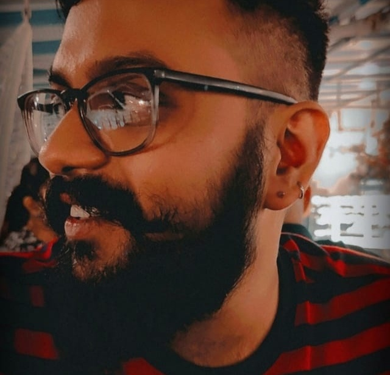

Hey, glad you could make it.
As you may know by now,
|

About
Nine years in advertising changes how you see things. Every ad, every billboard, every product description starts to look like a choice someone made. I've gotten weirdly good at noticing what works. And worse at ignoring what doesn't.
Professionally: Creative Director. Mainline. Digital. Experiential. Integrated. TVCs that aired. OOH that made people stop. Brand voice that stuck.
Since 2022, AI has been part of how I work: Claude, ChatGPT, ElevenLabs, Midjourney, LTX, Nano Banana, Kling, Higgsfield, HuggingFace. The production got faster. The budget got leaner. The gap between what I imagine and what gets made got smaller.
How I Work
I build brand voice systems. Tone that travels across a 30-second TVC and a 280-character push notification without losing the plot.
Big idea first. I write for the brief, not just the format. The thinking has to hold before the execution begins. Otherwise you're just making pretty things.
Script to voice. Brief to visual. Rough idea to finished campaign asset. A lot more gets made in a day now. The creative decisions are still mine. For now.
I can find the missing links in a brief. Tell you when the execution is working harder than the idea underneath it. When a campaign is solving for approval instead of impact. Also, I've been told I'm not the worst person to share a deadline with.
Beyond the Brief
Open to Creative Director roles, consulting gigs, and the briefs you're losing sleep over.
Also up for conversations about AI, photography, music, motorcycles, consciousness, or anything that makes the coffee hit different.